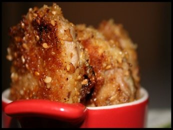

Filet mignon au sésame
Ingredients
4×
- 1 filet mignon
- 1 blanc d'oeuf
- graines de sésame
- 1 c. à s. de sauce soja

Préparation
Étape 1
Tremper 1 filet mignon coupé en cubes dans 1 blanc d'oeuf, puis l’enrober de graines de sésame.
Étape 2
Rissoler les cubes à la poêle. En option, ajouter 1 c. à s. de sauce soja.